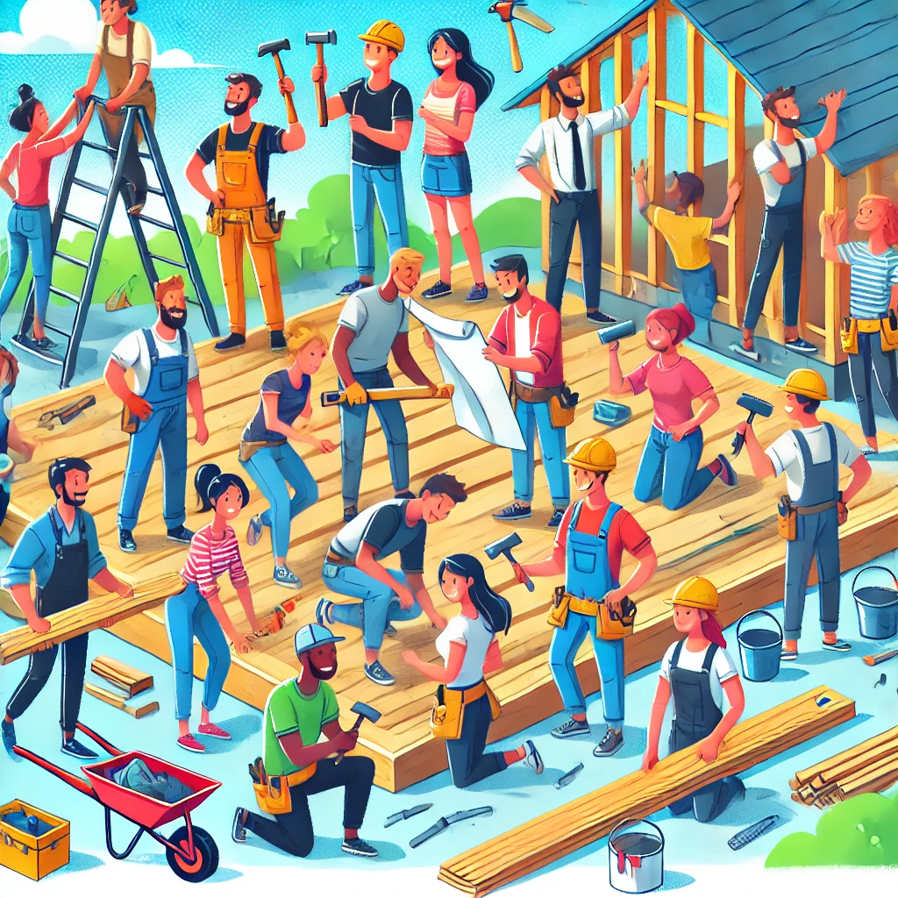
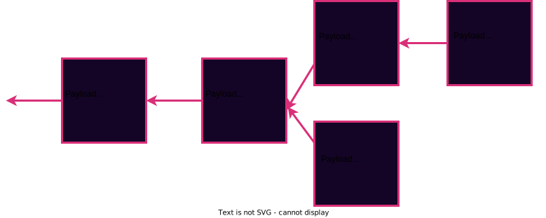
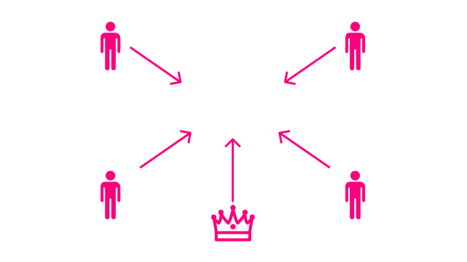
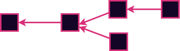
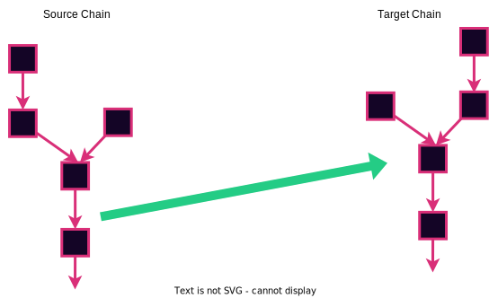

<!DOCTYPE html>
<html lang="en">

<head>
  <meta charset="utf-8" />
  <meta name="viewport" content="width=device-width, initial-scale=1.0, maximum-scale=1.0, user-scalable=no" />

  <title>Blockchain Summary</title>
  <link rel="icon" href="./../../assets/favicon.svg" />
  <link rel="shortcut icon" href="./../../assets/favicon.png" />
  <link rel="stylesheet" href="./../../dist/reset.css" />
  <link rel="stylesheet" href="./../../dist/reveal.css" />
  <link rel="stylesheet" href="./../.././assets/styles/PBA-theme.css" id="theme" />
  <link rel="stylesheet" href="./../../css/highlight/shades-of-purple.css" />

  <link rel="stylesheet" href="./../.././assets/styles/custom-classes.css" />

</head>

<body class="site">
  <header class="site-header">
    <!-- This logo is a link only on the watching server, not the production build -->
    <a href="">
      
    </a>
  </header>
  <main class="reveal">
    <article class="slides">
      <section  data-markdown><script type="text/template">

### Blockchain Summary

- No Blockchains do not necessarily mean "Crypto"
</script></section><section  data-markdown><script type="text/template">
### Who Am I?

- Andrew Burger <!-- .element: class="fragment" data-fragment-index="2" -->
- Researcher at Web3 Foundation <!-- .element: class="fragment" data-fragment-index="3" -->
- Software Engineer/Computer Science background <!-- .element: class="fragment" data-fragment-index="4" -->
- Student at first PBA been teaching at every PBA since <!-- .element: class="fragment" data-fragment-index="5" -->
</script></section><section  data-markdown><script type="text/template">
### What will we discuss?

- Why do we care about blockchains? <!-- .element: class="fragment" data-fragment-index="2" -->
- What even is a blockchain actually? <!-- .element: class="fragment" data-fragment-index="3" -->
- Yes I will avoid repeating anything from PBAX <!-- .element: class="fragment" data-fragment-index="4" -->
</script></section><section  data-markdown><script type="text/template">
### Coordination And Shared Stories


<aside class="notes"><ol>
<li><p>Importance of having trustless verifiable histories</p>
</li>
<li><p>Coordinating with people who you dont trust or know is still important</p>
<p>(Say you are running grocery store, trusting the customer has the money, trusting the cashier is being honest and not keeping the money, trusting your producers are giving you grocery items that are fresh and not going to do harm to your customers)</p>
</li>
<li><p>Trust and Centralization</p>
</li>
</ol>
</aside></script></section><section  data-markdown><script type="text/template">
### Properties we want

- Access is available for anyone(Uncensorable) <!-- .element: class="fragment" data-fragment-index="2" -->
- It can not be tampered with, nobody can go rewrite history.. <!-- .element: class="fragment" data-fragment-index="3" -->
- There is no force which can stop the system from operating(Unstoppable) <!-- .element: class="fragment" data-fragment-index="4" -->
- The rules are the rules for everyone nobody is privledged.. <!-- .element: class="fragment" data-fragment-index="5" -->

<aside class="notes"><ul>
<li>Too often certain parties or people are not able to access the data or system from the record thus creating enclaves of privledged groups</li>
<li>History cannot be changed just because some authority or party wants to rewrite what has happened</li>
<li>No matter how strong the authority or force is. Nothing is able to &quot;Shut it down&quot;</li>
<li>If you want to enter into the record or make changes you must follow the set of rules laid out for every user</li>
</ul>
</aside></script></section><section  data-markdown><script type="text/template">
### How can it be built and work then?


</script></section><section  data-markdown><script type="text/template">
### Networking

- What is the physical/logical way computers are setup to talk to each other? <!-- .element: class="fragment" data-fragment-index="2" -->
- Traditional networks are setup for centralization of resources <!-- .element: class="fragment" data-fragment-index="3" -->
- P2P Networks decentralize access to resources <!-- .element: class="fragment" data-fragment-index="4" -->

<aside class="notes"><p>A) This means a few Privledged nodes have special data access rights or access to the data
B) Remember decentralizing allows for less ability for someone to be restricted from accessing the network</p>
<p>A government could go to the few nodes who provide access and tell them not to serve me information or handle my requests for things..</p>
</aside></script></section><section ><section data-markdown><script type="text/template">
### Single Point of failure - Centralized Networks


</script></section><section data-markdown><script type="text/template">
### Single Point of failure - Centralized Networks


</script></section><section data-markdown><script type="text/template">
### Single Point of failure - Decentralized Networks


<aside class="notes"><ol>
<li>No single node or nodes (CDN) have access to all of the content or files or is critical for operating the network. Each node has a copy of the data.</li>
<li>No central node carrying all of the load of traffic.</li>
</ol>
</aside></script></section><section data-markdown><script type="text/template">
### Single Point of failure - Decentralized Networks


<aside class="notes"><ol start="4">
<li>Difficult to overload the network or DOS (No single node is privileged).</li>
<li>Although many nodes are run on Centralized cloud compute platforms, they don&#39;t have to be (Typically).</li>
</ol>
<p>Mention to block production ans block peering/importing. Generally there is no one single node carrying all the block production locic and not transactions and blocks fly in the same direction to a single node, but they are gossiped around.</p>
</aside></script></section></section><section ><section data-markdown><script type="text/template">
## Overlay Network


<aside class="notes"><p>This is how you can imagine the p2p network, lines represent the knowledge of other nodes.</p>
<p>But...</p>
</aside></script></section><section data-markdown><script type="text/template">
## Underlay Network


<aside class="notes"><p>This could be the real physical connection, and something like a transatlantic cable could be connecting two completely separate sets of nodes.</p>
<p>There could be logical connections that are not physical but also the opposite</p>
</aside></script></section><section data-markdown><script type="text/template">
## The Underlay Network breaks


</script></section><section data-markdown><script type="text/template">
## What's happen to the overlay?


<aside class="notes"><p>There are two disjointed networks that will continue working on their behalf. You will learn in later lectures what could happen if this network were running a blockchain</p>
</aside></script></section></section><section  data-markdown><script type="text/template">
### State Machine

- Now what are we actually doing on this network? <!-- .element: class="fragment" data-fragment-index="2" -->
- Sharing a snapshot of a statemachine i.e. the state! <!-- .element: class="fragment" data-fragment-index="3" -->
- Serving requests so we can change the state based on some new inputs <!-- .element: class="fragment" data-fragment-index="4" -->

<aside class="notes"><p>A) So i.e. I sent some money from Andrew to Larissa and now both of our accounts have different balances</p>
</aside></script></section><section  data-markdown><script type="text/template">
### State Machine Definition

- When you talk about the state of someone or something, you are referring to the condition they are in or what they look like at a particular time.
</script></section><section  data-markdown><script type="text/template">
### State Machine


</script></section><section  data-markdown><script type="text/template">
### State Machine

- Set of states & rules which codify how to transition states <!-- .element: class="fragment" data-fragment-index="2" -->
- i.e. Laundry (Wash State, Drying state, Off State etc...) <!-- .element: class="fragment" data-fragment-index="3" -->
- We in blockchains want a functional state machine. <!-- .element: class="fragment" data-fragment-index="4" -->

<aside class="notes"><ol>
<li>Can anyone think why we want a functional state machine? (We want to do things like interact with others and coordinate)</li>
<li>Can anyone think of any other practical systems which can be labeled as a state machine? Car transmission, Vending Machine, Any system.. etc etc</li>
<li>Take a second with neighbor to come up with a practical state machine and what are the various states and ways to transition them
(Lets share afterwards)</li>
<li>Before moving on lets remember why or why not would it be beneficial to have the state transition function(I.e. Pressing a button and changing states) Have a clear set of rules. I.E. Vending machine has a super user who can just take all of the soda out at any time, Car toll system can allow &quot;certain&quot; cars with privledge to bypass the fee etc etc.</li>
</ol>
</aside></script></section><section  data-markdown><script type="text/template">
### Account Abstractions

- How to represent users in a state machine? <!-- .element: class="fragment" data-fragment-index="2" -->
- Accounts & UTXO Model (Main models) <!-- .element: class="fragment" data-fragment-index="3" -->
</script></section><section  data-markdown><script type="text/template">
### Accounts

- User has an account with a balance <!-- .element: class="fragment" data-fragment-index="2" -->
- State is comprised of a bunch of Accounts and assosciated balances <!-- .element: class="fragment" data-fragment-index="3" -->
- To transfer you check to see if the sending account has enough funds <!-- .element: class="fragment" data-fragment-index="4" -->
</script></section><section  data-markdown><script type="text/template">
### Accounts


</script></section><section  data-markdown><script type="text/template">
### UTXO

- User has a set of coins <!-- .element: class="fragment" data-fragment-index="2" -->
- State is comprised of all of the coins for all users <!-- .element: class="fragment" data-fragment-index="3" -->
- Think of several dollar bills with your name written on it <!-- .element: class="fragment" data-fragment-index="4" -->
- To transfer you must spend the bills and create new ones <!-- .element: class="fragment" data-fragment-index="5" -->

<aside class="notes"><ul>
<li>The spending is a particularly weird thing you must destroy the old bills and create new ones to give to others as well as what new bills you give back to yourself (in the form of change)</li>
</ul>
</aside></script></section><section  data-markdown><script type="text/template">
### UTXO


</script></section><section ><section data-markdown><script type="text/template">
### Hash List Combined with State machine

- Each block contains hash of previous block <!-- .element: class="fragment" data-fragment-index="2" -->
- Each block in the Hash list contains state machine information <!-- .element: class="fragment" data-fragment-index="3" -->
- Now we have combined coordination and shared histories with a computer science concept <!-- .element: class="fragment" data-fragment-index="4" -->
</script></section><section data-markdown><script type="text/template">
## Hash Linked List



<aside class="notes"><p>This is a simplified blockchain. Each block has a pointer to the parent block as well as a payload.</p>
</aside></script></section><section data-markdown><script type="text/template">
## Hash Linked List


<aside class="notes"><p>The pointer is a cryptographic hash of the parent block.</p>
</aside></script></section><section data-markdown><script type="text/template">
## Hash Linked List


<aside class="notes"><p>This ensures data integrity throughout the entire history of the chain. This is the simplest form that a blockchain could take and indeed it allows us to agree on a shared history.</p>
</aside></script></section><section data-markdown><script type="text/template">
### Genesis Block


<aside class="notes"><p>The first block in the chain is typically called a the &quot;Genesis block&quot; named after the first book in the judaeo-christian mythology - The beginning of our shared story. The parent hash is chosen to be some specific value. Typically we use the all-zero hash, although any fixed widely agreed-upon value would also do.</p>
</aside></script></section></section><section  data-markdown><script type="text/template">
### Forks

- Where one set of network participants disagree on the hash list <!-- .element: class="fragment" data-fragment-index="2" -->
- Potentially malicious actors want to influence the network<!-- .element: class="fragment" data-fragment-index="3" -->
- How can we choose who to believe or listen to at any given time? <!-- .element: class="fragment" data-fragment-index="4" -->

<aside class="notes"><p>A) Perhaps they want to have a particular part of the story happen which can benefit them.(Maybe Alice breaks her leg and they are the hospital so they will get money for treating her :) )</p>
</aside></script></section><section  data-markdown><script type="text/template">
### Consensus

- How to coordinate with others trustlessly? <!-- .element: class="fragment" data-fragment-index="2" -->
</script></section><section ><section data-markdown><script type="text/template">
## Five Aspects of Consensus

<pba-flex center>

- State machine validity
- Arbitrary / Political validity
- Authorship throttling
- Fork choice heuristic
- Finality

</pba-flex>

<aside class="notes"><p>The first two aspects are relatively simple and I&#39;ll discuss them briefly right now. The third and fourth are the main topic of this lecture. The fifth is covered in detail two lectures from now in great detail.</p>
<p>The first three aspects are about ruling possibilities out. The fourth and fifth are about deciding between any remaining possibilities.</p>
</aside></script></section><section data-markdown><script type="text/template">
## State Machine Validity

Some forks can be ruled out simply because they contain invalid state transitions.


<aside class="notes"><p>Example spending more money than you have. Noting your present location such that you would have traveled faster than speed of light since last record. Calling a smart contract with invalid parameters.</p>
</aside></script></section><section data-markdown><script type="text/template">
## Arbitrary / Political Validity

Similar to state machine validity.<br/>
Examples:

<pba-flex>

- Blocks that are too big
- Blocks that have "hack" transactions
- Empty blocks
- Block with Even state roots

</pba-flex>


<aside class="notes"><p>This concept is similar to the previous slide. In some sense this is even the same. This allows us to rule out some forks just for not having properties that we like. Or for having properties that we dislike.</p>
<p>Not everyone will agree on these properties ad that leads to long-term network splits.</p>
</aside></script></section></section><section ><section data-markdown><script type="text/template">
## Authorship Throttling

Real-world blockchains impose additional restrictions on who can author blocks. Why?


<aside class="notes"><p>These blockchains are supposed to be permissionless right? At least many of them are. Some are even very hardcore about that goal. So why would we want to restrict the authoring.</p>
<p>Answer: So the nodes are not overwhelmed. Unthrottled authoring leads to fork chaos. If anyone authored at any moment there would be blocks raining down left and right. It would be impossible to check them all. It would be DOS central. So we need some organization / order to the process.</p>
</aside></script></section><section data-markdown><script type="text/template">
## Why Author at All?

- Altruism - You feel good about making the world a better place
- Your Transitions - Because you want to get your own transitions in
- Explicit incentives - Eg block reward

<aside class="notes"><p>If it costs energy to author blocks, why would anyone want to author to begin with?</p>
<p>Mining only when you want to get your transaction in seems like a good idea to me. People who don&#39;t want to self author, can pay other a fee to do it for them. This is the purpose of transaction fees. Most chains have transaction fees specified in the transactions themselves which go to the author</p>
<p>Some networks also add an explicit incentives such as a 50BTC reward per block.</p>
</aside></script></section><section data-markdown><script type="text/template">
## Byzantine Generals Problem

<pba-cols>
<pba-col>



</pba-col>

<pba-col>

- Divisions plan to attack
- Must make coordinated attack to succeed
- Some generals might be traitors and behave maliciously

</pba-col>
</pba-cols>

[Cornell Lecture Slides](https://www.cs.cornell.edu/courses/cs6410/2018fa/slides/18-distributed-systems-byzantine-agreement.pdf)

<aside class="notes"><p>Several divisions of the Byzantine army are camped around an enemy city.
They plan to attack the city, but have not yet decided when to attack.
If the attack is coordinated, they will probably be successful, but if it is uncoordinated, they will probably be defeated.
What do our three properties mean in this scenario?</p>
<ul>
<li>Termination - every honest general will eventually decide when to attack</li>
<li>Agreement - honest general will all agree to attack at the same time</li>
<li>Integrity - the attack time will have been proposed by at least one honest general</li>
</ul>
<p>Leslie Lamport proposed this problem in the form of a story as a typical representative of the distributed consensus problem.</p>
<p>Since then we&#39;ve looked through so many layers of abstraction (contracts, smart contracts, state machines, dags) and so many technical implementation details (P2P networking, platform agnostic bytecodes, blockchain headers, merkle proofs).
We&#39;ve taken a huge class of problems - human coordination problems - and distilled them down to their absolute essence.
Human coordinate at global scale reduced to this one cute, carefully stated problem.</p>
</aside></script></section><section data-markdown><script type="text/template">
## Desired Properties

All honest participants...

- **Termination** - Eventually reach some decision
- **Agreement** - Reach the same decision
- **Integrity** - Reach at most one decision, which was proposed by at least one participant.
</script></section><section data-markdown><script type="text/template">
## Also Validity

If all participants unanimously propose the same decision, all honest participants reach that decision.

<aside class="notes"><p>Another desireable property that is sometimes too obvious to say.</p>
</aside></script></section></section><section  data-markdown><script type="text/template">
## Example: Where to go for dinner

<pba-cols>
<pba-col>


</pba-col>

<pba-col>

- Termination - Stan, Kyle, and Kenny will each eventually decide where to eat.
- Agreement - Stan, Kyle, and Kenny will each decide to eat at the same place.
- Integrity - Stan, Kyle, and Kenny will eat at either Whistlin' Willies or Casa Bonita.

</pba-col>
</pba-cols>

<aside class="notes"><p>Stan, Kyle, Kenny, and Cartman are trying to decide where to have dinner.
Stan, Kyle, and Kenny want to have something yummy and spend time together.
Cartman is secretly pursuing his own goals and doesn&#39;t care whether dinner is yummy.
In fact he secretly hopes they won&#39;t decide at all so he can go home and eat KFC with his mom.</p>
<p>Stan and Kyle both propose Whistlin&#39; Willie&#39;s for dinner.
Kenny and Cartman propose Casa Bonita.</p>
<p>In the end Kenny may not agree that Whistlin&#39; Willie&#39;s is the best option for dinner, but he will agree that it is the legitimate group decision.</p>
</aside></script></section><section  data-markdown><script type="text/template">
## Adversarial Conditions

- The participants want to agree on _something_ <!-- .element: class="fragment" data-fragment-index="2" -->
- They don't trust each other <!-- .element: class="fragment" data-fragment-index="3" -->
- Some could be faulty, or make mistakes <!-- .element: class="fragment" data-fragment-index="4" -->
- Some could be straight up malicious (aka Byzantine) <!-- .element: class="fragment" data-fragment-index="5" -->
</script></section><section ><section data-markdown><script type="text/template">
## Leader Election

We need to elect a small set (or ideally a single) entity who are allowed to author next.

In pre-blockchain consensus this was called the "leader", and still often is.

<aside class="notes"><p>By electing a few leaders, we are able to throttle the authoring.</p>
</aside></script></section><section data-markdown><script type="text/template">
## Liveness

The ability of the system to keep authoring new blocks

<aside class="notes"><p>Before we go on, I want to introduce the concept of liveness. It is a desireable property that consensus systems want to have. Systems that have better liveness properties offer higher quality blockspace. Chains without liveness guarantees become stalled.</p>
</aside></script></section></section><section  data-markdown><script type="text/template">
## Desireable Properties

<pba-flex center>

- **Safety** aka **Finality** - Nothing bad will happen
- **Liveness** - Something good will eventually happen

</pba-flex>

<aside class="notes"><p>Traditional literature typically uses the term safety. Blockchain folks typically talk about finality. They basically mean the same thing.</p>
<p>Finality can be proved to entities that are not involved in consensus.</p>
<p>We spoke about liveness previously in the authoring system. There it means that more blocks will be authored, more blockspace will be created and put up for sale. Here, in finality, it means that more blocks will be finalized. Of course liveness in the finality depends on liveness in the authoring.</p>
<p>These two decisions can be entirely orthogonal to one another, or wrapped up together.</p>
</aside></script></section><section ><section data-markdown><script type="text/template">
# Fork Choice Heuristics

Each node's preference for which fork is best

<pba-flex center>

- Longest chain rule <!-- .element: class="fragment" data-fragment-index="2" -->
- Most accumulated work <!-- .element: class="fragment" data-fragment-index="3" -->
- Most blocks authored by Alice <!-- .element: class="fragment" data-fragment-index="4" -->
- Most total transactions (or most gas) <!-- .element: class="fragment" data-fragment-index="5" -->



</pba-flex>

<aside class="notes"><p>The fork choice allows you, as a network participant, to decide which fork you consider best for now. It is not binding. Your opinion can change as you see more blocks appear on the network</p>
</aside></script></section><section data-markdown><script type="text/template">
## Assumptions Deterministic Finality

- 2/3 of all participants are honest <!-- .element: class="fragment" data-fragment-index="2" -->
- Vote based on some heuristic <!-- .element: class="fragment" data-fragment-index="3" -->
- Once 2/3 Votes are accounted for we dont question that block anymore <!-- .element: class="fragment" data-fragment-index="4" -->

<aside class="notes"><ul>
<li>Bitcoin has no deterministic end point or finality so how do you know when a transaction is final?
(The amount of work to &quot;Fake&quot; the transaction costs more than the actual transaction..)</li>
<li>What assumptions are made in bitcoin? (The fact that you spend energy to do something faulty would be dumb)</li>
</ul>
</aside></script></section></section><section  data-markdown><script type="text/template">
## Proof of Work

Satoshi's Big invention.

Solve a Pre-image search - earn the right to author.
</script></section><section  data-markdown><script type="text/template">
# Proof of Stake

- Divide time into slots(i.e. 6 seconds 3 seconds..) <!-- .element: class="fragment" data-fragment-index="2" -->
- Uses an economic staking game to select the authorities. <!-- .element: class="fragment" data-fragment-index="3" -->
- If someone is misbehaving we take their money. <!-- .element: class="fragment" data-fragment-index="4" -->
- How do people get punished in Proof Of Work? <!-- .element: class="fragment" data-fragment-index="5" -->

<aside class="notes"><p>There is an economic game called staking as part of the state machine that allows selecting the authorities who will participate in the PoA scheme. Actually there isn&#39;t just <em>one</em> way to do it, there are many. Kian will talk a lot more about this and about the way it is done in Polkadot later. I&#39;ll just give the flavor now.</p>
<p>The basic idea is that anyone can lock up some tokens on chain (in the state machine). The participants with the most tokens staked are elected as the authorities. There is a state transition that allows reporting authority misbehavior (eg authoring competing blocks at the same height), and the authority loses their tokens. There are often block rewards too like PoW.</p>
</aside></script></section><section  data-markdown><script type="text/template"></script></section><section  data-markdown><script type="text/template">
### Bridging


</script></section><section  data-markdown><script type="text/template">
### Bridging

- Bridging naively single signer
- Bridging a little better.. (Multisig of participants listening to both and the aggregate being trusted)
- "Trustless" Bridging using light clients

<aside class="notes"><ol>
<li>One god Party who has all the funds or has ultimate say whether a transaction from Chain A or B is valid.
This can even look like sending the funds to a one party who then sends the money to another party on another chain</li>
<li>Multisig of small party which requires a threshold who listens to both chains (And you trust that party is acting honestly)</li>
<li>You verify the other chains state by listening and being a participant in their consensus</li>
</ol>
</aside></script></section><section  data-markdown><script type="text/template">
### Bridging

- Why is it hard to get two separate consensus systems to sync? <!-- .element: class="fragment" data-fragment-index="2" -->
- Where is the accountability? <!-- .element: class="fragment" data-fragment-index="3" -->
- What are the gurantees one authority set has to another authority set? <!-- .element: class="fragment" data-fragment-index="4" -->
</script></section><section  data-markdown><script type="text/template">
## Source Chain Re-Orgs


<aside class="notes"><p>On PoW chains this is truly just a judgement call and a prayer.
If the source chain has deterministic finality we can do better.
We need to wait for finality.
But even this isn&#39;t foolproof.
More on this after we cover the basic design.</p>
</aside></script></section><section  data-markdown><script type="text/template">
### Light Clients

- Syncing with just block headers <!-- .element: class="fragment" data-fragment-index="2" -->
- Allows easy listening on p2p network to view votes on blocks <!-- .element: class="fragment" data-fragment-index="3" -->
</script></section><section  data-markdown><script type="text/template">
## Light Client Duties

<pba-flex center>
  
- ❌ Sync blocks
- ❌ Execute blocks
- ✅ Sync headers
- ✅ Checks consensus
- ❌ Maintains state

</pba-flex>

<aside class="notes"><p>This is what a typical light client does.
There is not a single definition of light client.
There are varying degrees of lightness to suit your needs.</p>
</aside></script></section><section  data-markdown><script type="text/template">
### Conclusion

- These were the summary of the pieces to build this web3 system that we want
- Remember: Zoom out and always keep the bigger picture in mind

<aside class="notes"><p>2.) Frequently some of the details of the tech will get blurred shortcuts will get made in order to make the system more &quot;efficient&quot; and faster. However remember why we started in this direction in the first place.</p>
</aside></script></section><section  data-markdown><script type="text/template">
### The End


</script></section><section  data-markdown><script type="text/template"></script></section>
    </article>
  </main>

  <script src="./../../dist/reveal.js"></script>

  <script src="./../../plugin/markdown/markdown.js"></script>
  <script src="./../../plugin/highlight/highlight.js"></script>
  <script src="./../../plugin/zoom/zoom.js"></script>
  <script src="./../../plugin/notes/notes.js"></script>
  <script src="./../../plugin/math/math.js"></script>

  <script src="./../../assets/plugin/mermaid.js"></script>
  <script src="./../../assets/plugin/mermaid-theme.js"></script>

  <script src="./../../assets/plugin/chart/chart.js"></script>
  <script src="./../../assets/plugin/chart/chart.min.js"></script>

  <script src="./../../assets/plugin/tailwindcss.min.js"></script>

  <script>
    function extend() {
      var target = {};
      for (var i = 0; i < arguments.length; i++) {
        var source = arguments[i];
        for (var key in source) {
          if (source.hasOwnProperty(key)) {
            target[key] = source[key];
          }
        }
      }
      return target;
    }

    // default options to init reveal.js
    var defaultOptions = {
      controls: true,
      progress: true,
      history: true,
      center: true,
      transition: 'default', // none/fade/slide/convex/concave/zoom
      slideNumber: true,
      mermaid: {
        startOnLoad: false,
        logLevel: 3,
        theme: 'base',
        themeVariables: {
          primaryColor: purple,
          primaryTextColor: white,
          primaryBorderColor: pink,
          lineColor: pink,
          secondaryColor: lightPurple,
          tertiaryColor: lightPurple,
        },
      },
      chart: {
        defaults: {
          color: 'lightgray', // color of labels
          scale: {
            beginAtZero: true,
            ticks: { stepSize: 1 },
            grid: { color: "lightgray" }, // color of grid lines
          },
        },
        line: { borderColor: ["#ccc", "#E6007A", "#6D3AEE"], "borderDash": [[5, 10], [0, 0]] },
        bar: { backgroundColor: ["#ccc", "#E6007A", "#6D3AEE"] },
      },
      plugins: [
        RevealMarkdown,
        RevealHighlight,
        RevealZoom,
        RevealNotes,
        RevealMath,
        RevealMermaid,
        RevealChart
      ]
    };

    // options from URL query string
    var queryOptions = Reveal().getQueryHash() || {};

    var options = extend(defaultOptions, {"width":1400,"height":900,"margin":0,"minScale":0.2,"maxScale":2,"transition":"none","controls":true,"progress":true,"center":true,"slideNumber":true,"backgroundTransition":"fade"}, queryOptions);
  </script>


  <script>
    Reveal.initialize(options);
  </script>
</body>

</html>
